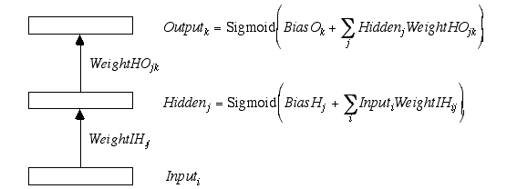

John Bullinaria's Step by Step Guide to Implementing a Neural Network in C
This document contains a step by step guide to implementing a simple neural network in C. It
is aimed mainly at students who wish to (or have been told to) incorporate a neural network learning
component into a larger system they are building. Obviously there are many types of neural network
one could consider using - here I shall concentrate on one particularly common and useful type,
namely a simple three-layer feed-forward back-propagation network (multi layer perceptron).
This type of network will be useful when we have a set of input vectors and a corresponding set
of output vectors, and our system must produce an appropriate output for each input it is given.
Of course, if we already have a complete noise-free set of input and output vectors, then a simple
look-up table would suffice. However, if we want the system to generalize, i.e. produce
appropriate outputs for inputs it has never seen before, then a neural network that has learned
how to map between the known inputs and outputs (i.e. our training set) will often do a pretty good
job for new inputs as well.
I shall assume that the reader is already familiar with C, and, for more details about neural
networks in general, simply refer the reader to the newsgroup comp.ai.neural-nets and the
associated Neural Networks FAQ. So, let us
begin...
A single neuron (i.e. processing unit) takes it total input In and produces an output
activation Out. I shall take this to be the sigmoid function
Out = 1.0/(1.0 + exp(-In));
/* Out = Sigmoid(In) */
though other activation functions are often used (e.g. linear or hyperbolic tangent). This
has the effect of squashing the infinite range of In into the range 0 to 1. It also has
the convenient property that its derivative takes the particularly simple form
Sigmoid_Derivative = Sigmoid * (1.0 - Sigmoid) ;
Typically, the input In into a given neuron will be the weighted sum of output activations
feeding in from a number of other neurons. It is convenient to think of the activations flowing
through layers of neurons. So, if there are NumUnits1 neurons in layer 1, the total
activation flowing into our layer 2 neuron is just the sum over Layer1Out[i]*Weight[i],
where Weight[i] is the strength/weight of the connection between unit i in layer 1
and our unit in layer 2. Each neuron will also have a bias, or resting state, that is added to
the sum of inputs, and it is convenient to call this weight[0]. We can then write
Layer2In = Weight[0] ;
/* start with the bias */
for( i = 1 ; i <= NumUnits1 ; i++ ) {
/* i loop over layer 1 units */
Layer2In += Layer1Out[i] * Weight[i] ; /* add in weighted contributions from layer 1 */
}
Layer2Out = 1.0/(1.0 + exp(-Layer2In)) ;
/* compute sigmoid to give activation */
Normally layer 2 will have many units as well, so it is appropriate to write the weights
between unit i in layer 1 and unit j in layer 2 as an array Weight[i][j].
Thus to get the output of unit j in layer 2 we have
Remember that in C the array indices start from zero, not one, so we would declare our variables as
(or, more likely, declare pointers and use calloc or malloc to allocate the memory).
Naturally, we need another loop to get all the layer 2 outputs
Three layer networks are necessary and sufficient for most purposes, so our layer 2 outputs
feed into a third layer in the same way as above
The code can start to become confusing at this point - I find that keeping a separate
index i, j, k for each layer helps, as does an intuitive notation for distinguishing
between the different layers of weights Weight12 and Weight23. For obvious
reasons, for three layer networks, it is traditional to call layer 1 the Input layer,
layer 2 the Hidden layer, and layer 3 the Output layer.
Our network thus takes on the familiar form that we shall use for the rest of this document

Also, to save getting all the In's and Out's confused, we can write
LayerNIn as SumN. Our code can thus be written
Generally we will have a whole set of NumPattern training patterns, i.e. pairs
of input and target output vectors,
Input[p][i] , Target[p][k]
labelled by the index p. The network learns by minimizing some measure of the error
of the network's actual outputs compared with the target outputs. For example, the sum squared
error over all output units k and all training patterns p will be given by
(The factor of 0.5 is conventionally included to simplify the algebra in deriving
the learning algorithm.) If we insert the above code for computing the network outputs
into the p loop of this, we end up with